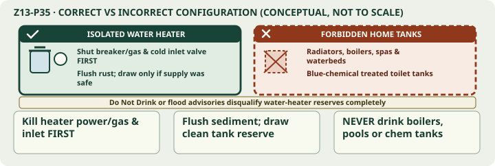

Z13-P35 · Home survival and utilities · New manuscript
Access safe indoor water reserves while avoiding forbidden boiler and toilet tanks
Distinguish legitimate emergency indoor potable reserves (properly isolated water-heater tank) from chemically or mechanically unsafe household water.
When it applies · Sudden municipal main break or supply cut when stored bottled water runs short.
Equipment · Water-heater electric breaker/gas shutoff access, short clean food-grade hose/bucket, and written tank manual.

Actions
- Recognize legitimate emergency indoor potable sources ONLY when municipal/well supply was confirmed safe before shutoff: melted ice cubes, liquid packed in canned fruits/vegetables, and clean residential water-heater tank water.[U08, W06]
- Use tank water only if the supply was safe and the utility and heater manufacturer allow recovery. Have the safe shutdown, cooling and draining procedure ready in advance. Do not use a hot, damaged, pressurized or gas-leaking appliance.[U08, U11]
- Default to stored or officially supplied potable water when appliance instructions, system condition or advisory status are uncertain.[U08, D12]
Failure recognition · Draining a hot electric water heater with the breaker still ON (burning out heating elements) or drinking chemically treated toilet-tank water.[U08, W01]
Verify · Confirm supply was safe pre-outage, water-heater power/gas is OFF before draining, sediment flushed clear, and zero radiator/chemical-tank water used.[U08]
Stop or change course · Any active Do Not Drink/Do Not Use chemical water advisory, rusty oily odor, or flood contamination disqualifies water-heater reserves completely.[W07, W01, U08]
Evidence and editorial notes
- D12 · CDC · Drinking Water Advisories: An Overview (current web edition)
- Section: Water-System Interruptions and Advisory Compliance · Conditions: Municipal main breaks, depressurization, chemical spills, or treatment-plant outages
Support: Follow the exact active utility advisory tier (Boil Water, Do Not Drink, or Do Not Use), shut off automatic icemakers/appliances during advisories, flush household pipes strictly per utility clearance instructions after restoration, and rely on stored or agency-distributed potable water during outages.
Limitations: Boiling water during a chemical-spill Do Not Drink/Do Not Use notice can volatilize or concentrate contaminants. · Conflicting evidence: None; integrates W07 into Z15 infrastructure-disruption scenarios.
Editorial note: Anchors municipal water-outage compliance and safe flushing. · Specialist reviewer: Drinking-water utility and public health
Primary source · checked 2026-11-24 - U08 · FEMA / Ready.gov · Water Storage and Emergency Supply (current web edition)
- Section: Water > Emergency Household Supply, Shutoff, and Alternate Indoor Sources · Conditions: Household plumbing disruptions, water-main breaks, or winter freeze outages
Support: Store at least 1 gallon per person per day for several days (two weeks where feasible for extended outages), know the main water shutoff valve location, and recognize clean indoor water-heater reserve boundaries only after shutting off power/gas and confirming supply safety.
Limitations: Never use water from radiators, hot-water boilers, or chemically treated toilet tanks for drinking. · Conflicting evidence: None; complements CDC-S (W06, W14).
Editorial note: Covers household water shutoffs, pipe-freeze prevention, and safe indoor reserves. · Specialist reviewer: Plumbing safety and drinking-water public health
Primary source · checked 2026-11-24 - U11 · U.S. DOT PHMSA · Pipeline Leak Recognition and What to Do (Current web edition)
- Section: What to DO; What Not to Do · Conditions: Suspected gas or pipeline leak
Support: Leave the affected area and call 911 and the provider from safety. Avoid spark sources and leave valve and restoration decisions to authorized responders.
Limitations: Do not transpose outdoor hazmat sheltering directions to a gas leak inside the dwelling. · Conflicting evidence: See A02 claim audit for boundaries.
Editorial note: Establishes strict utility-leak evacuation and licensed restoration gates. · Specialist reviewer: Gas utility safety and fire service
Primary source · checked 2026-11-25 - W01 · CDC · How to Make Water Safe in an Emergency (2024-09-19)
- Section: Water with fuel or toxic chemicals in it · Conditions: Suspected fuel, toxic chemicals or radioactive contamination
Support: Use a different safe supply. Standard boiling and microbial disinfection do not make this water safe.
Limitations: Does not list contaminant-specific lab remediation; applies to emergency consumer decisions only. · Conflicting evidence: None across CDC/EPA emergency guidance.
Editorial note: Used as upstream hard-stop gate prior to any field treatment card. · Specialist reviewer: Drinking-water safety and public health
Primary source · checked 2026-11-24 - W06 · CDC · How to Create an Emergency Water Supply (current web edition)
- Section: How to store emergency water; Safe storage containers · Conditions: Potable water intended for emergency storage
Support: Prefer sealed commercial water or clean food-grade tight-closing containers. Avoid containers that held toxic chemicals.
Limitations: Container shelf durability and rotation depend on plastic/material type and storage heat. · Conflicting evidence: None; reinforces strict raw-vs-clean segregation.
Editorial note: Used to enforce labeling and dedicated raw/potable vessel separation. · Specialist reviewer: Drinking-water safety and public health
Primary source · checked 2026-11-24 - W07 · CDC · Drinking Water Advisories: An Overview (current web edition)
- Section: Boil water; Do not drink; Do not use · Conditions: Public-water system advisories
Support: The notice determines safe activities. Use another source for do-not-drink notices. Do not use tap water for any purpose under a do-not-use notice unless authorities direct otherwise.
Limitations: Local utility directives supersede general field summaries. · Conflicting evidence: None; exact advisory category is authoritative.
Editorial note: Distinguishes boil-water, do-not-drink, and do-not-use actions explicitly. · Specialist reviewer: Drinking-water utility and public health
Primary source · checked 2026-11-24
Source lineage · FEMA Ready.gov Water and CDC Emergency Water; new manuscript · Classification · New manuscript.